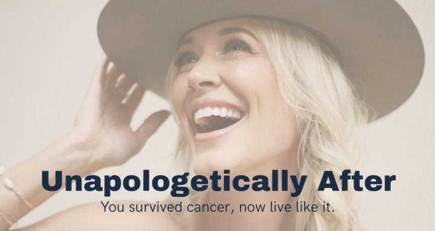

The Editor-in-Chief
Not a traditional bio.
More of an editor's note — the bio, the voice, and the press behind Feinix Haus.

Kelly Gunn
Founder & Editor-in-Chief
The Editor
The woman behind the house.
Feinix Haus is run like a publishing house, and Kelly runs it like an editor-in-chief. Her job is the same one an editor has at any magazine — to decide what gets in, what doesn't, and how the whole thing reads.
What you'll find here is Kelly's point of view: on living deliberately, on building a life that actually fits, on what comes after the part everyone else calls the hard part.
Kelly Gunn
Founder & Editor-in-Chief
Work with Kelly →
Press & Media
As seen in.
PEOPLE
Feature
C-Heads
Magazine
The Sunday
Edit
After the
Diagnosis · Podcast
The Next Chapter
Now do the thing.
Read the essays, join the community, or apply for the editorial work. Whichever door, the house is open.